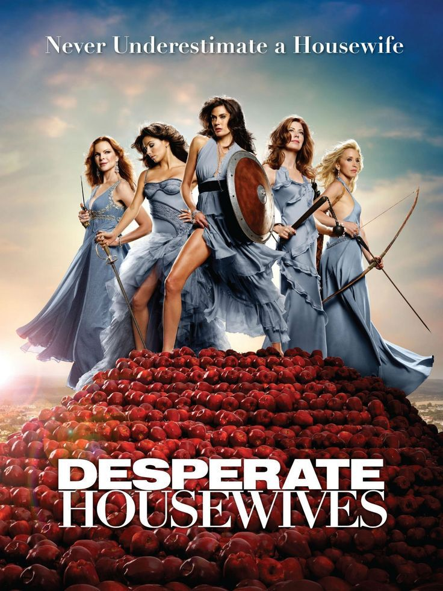
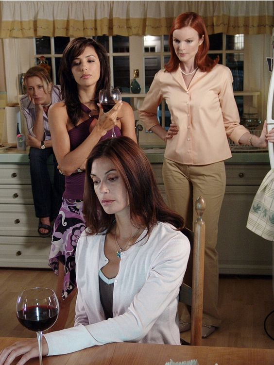
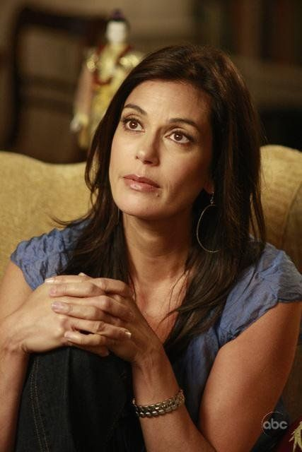
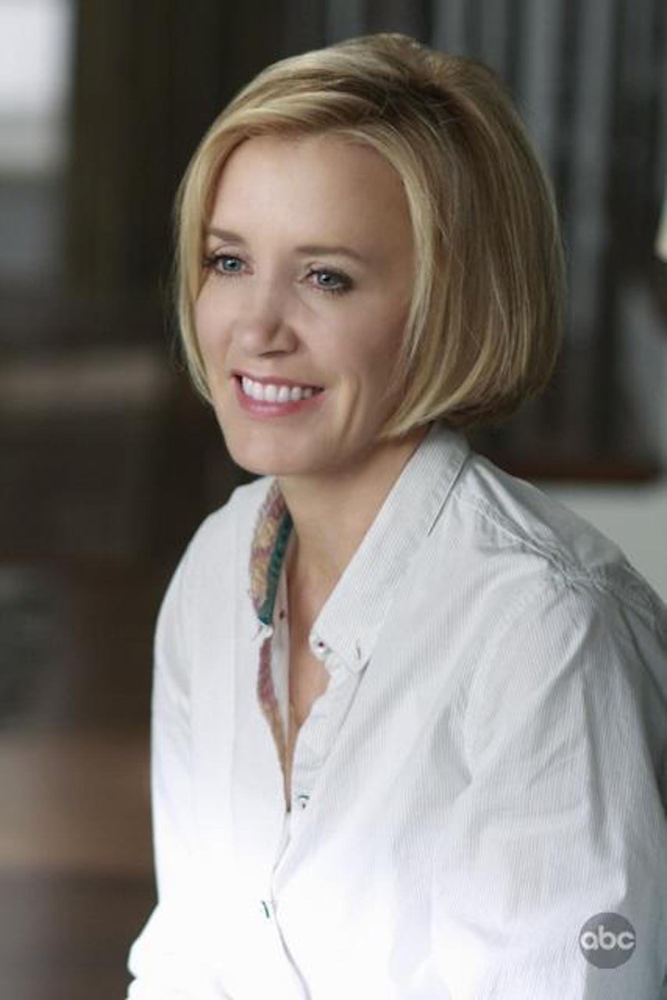
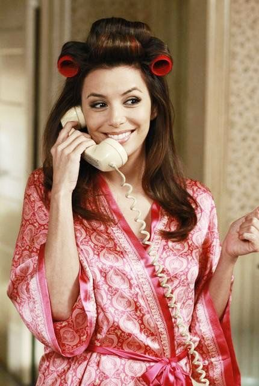
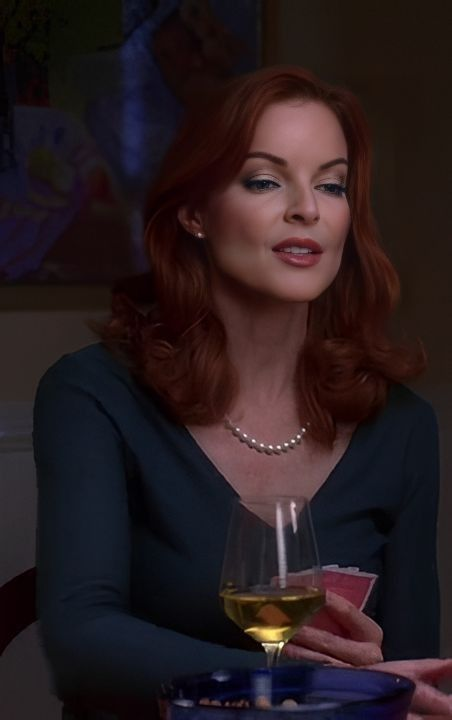
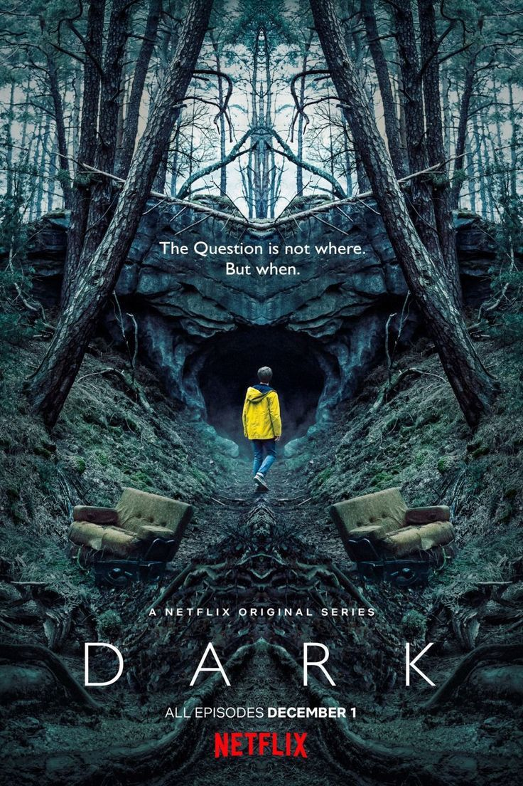

"Grey's Anatomy" es una serie de televisión que ha cautivado a audiencias en todo el mundo desde su debut en 2005.
Creada por Shonda Rhimes, la serie sigue las vidas y carreras de los médicos residentes del Grey Sloan Memorial
Hospital mientras enfrentan desafíos personales y profesionales en el competitivo mundo de la medicina.
Esta serie logra destacar no solo por su realista representación de la vida hospitalaria, sino también por la
profundidad y complejidad de sus personajes. Los espectadores se verán inmersos en las vidas de Meredith Grey y sus
colegas mientras navegan por casos médicos intrigantes, relaciones amorosas complicadas y decisiones éticas que ponen
a prueba sus valores.
"Grey's Anatomy" se destaca por su habilidad para abordar temas médicos complejos de manera accesible para el público
general, lo que la hace tanto educativa como entretenida. La serie también aborda temas sociales y éticos, lo que la
convierte en una experiencia televisiva rica y reflexiva. La química entre el elenco es uno de los puntos fuertes de
la serie, lo que hace que los personajes sean creíbles y atractivos. Los diálogos ingeniosos y las dinámicas
interpersonales mantienen a los espectadores interesados y emocionalmente invertidos en la trama.
A lo largo de sus múltiples temporadas, "Grey's Anatomy" ha sabido reinventarse y mantener su frescura, introduciendo
nuevos personajes y desafíos médicos. Si buscas una serie que te atrape desde el primer episodio y te haga reír,
llorar y reflexionar, "Grey's Anatomy" definitivamente debería estar en tu lista de reproducción. Prepara los pañuelos
y prepárate para un emocionante viaje a través del mundo de la medicina y las relaciones humanas.
¡Haz un clic encima de cada una para poder escucharlas!
"Lucifer": Un Giro Fascinante en el Mundo Sobrenatural
"Lucifer" es una serie que cautiva por su originalidad y su enfoque único en el género sobrenatural. Basada en el
personaje de DC Comics, la serie sigue las peripecias de Lucifer Morningstar, el Diablo, quien decide abandonar el
Infierno y vivir en Los Ángeles. Allí, se convierte en propietario de un lujoso club nocturno y, sorprendentemente, en
un consultor para la policía.
La serie combina elementos de drama policial, comedia y fantasía de manera ingeniosa. Tom Ellis, quien interpreta a
Lucifer, ofrece una actuación carismática y cautivadora que contribuye significativamente a la apreciación de la
serie. A medida que trabaja junto a la Detective Chloe Decker para resolver crímenes, el contraste entre el mundo
celestial y la realidad humana crea situaciones cómicas y emocionales.
El guión de "Lucifer" sorprende al explorar temas existenciales, moralidad y redención, mientras que mantiene un ritmo
envolvente. La interacción entre los personajes principales, así como las revelaciones sobre el pasado de Lucifer,
mantienen a los espectadores intrigados y comprometidos con la historia.
Además de su atractiva trama, "Lucifer" destaca por sus diálogos ingeniosos y referencias literarias y culturales. La
combinación de elementos sobrenaturales y humanos crea una dinámica única que ofrece momentos emotivos y reflexiones
sobre la naturaleza de la libre voluntad y la redención.
Si estás en busca de una serie que ofrezca una mezcla emocionante de crímenes, fantasía y dilemas morales, "Lucifer"
es una elección sólida. Su enfoque fresco en el género sobrenatural y su capacidad para equilibrar el drama con la
comedia hacen que sea una recomendación que no querrás pasar por alto.
Temporadas:
Temporada
Número de Capítulos
Fecha de Estreno
Temporada 1
13
25 de enero de 2016
Temporada 2
18
19 de septiembre de 2016
Temporada 3
26
2 de octubre de 2017
Temporada 4
10
8 de mayo de 2019
Temporada 5 (Parte 1)
8
21 de agosto de 2020
Temporada 5 (Parte 2)
8
28 de mayo de 2021
Detrás de Cámaras:
El maravillosa trailer de la serie Lucifer
"Esposas Desesperadas": Un Viaje Irresistible a las Vidas Privadas

"Esposas Desesperadas" es una serie que, desde su estreno, capturó la atención del público con su mezcla única de
comedia, drama y misterio. Situada en el pintoresco vecindario de Wisteria Lane, la serie despliega las vidas
aparentemente perfectas de varias mujeres que, detrás de sus puertas, ocultan una multitud de secretos.
Lo que distingue a "Esposas Desesperadas" es su habilidad para combinar tramas intrigantes con un humor mordaz y
perspicaz. A través de las vidas de Susan, Lynette, Bree, Gabrielle y Edie, la serie ofrece una mirada aguda y, a
menudo, humorística sobre los desafíos de la vida suburbana, las relaciones y la amistad.
El reparto estelar, encabezado por Teri Hatcher, Felicity Huffman, Marcia Cross, Eva Longoria y Nicollette Sheridan,
brilla con actuaciones convincentes que mantienen a los espectadores comprometidos y emocionalmente conectados.
Más allá de los escándalos y giros argumentales, "Esposas Desesperadas" se atreve a explorar temas más profundos,
desde problemas maritales y familiares hasta cuestiones de identidad y propósito en la vida. Su narrativa única,
contada desde el punto de vista post-mortem de Mary Alice Young, aporta un tono melancólico pero intrigante a la
serie.
Si buscas una serie que te ofrezca risas, lágrimas, misterios y reflexiones sobre la vida moderna, "Esposas
Desesperadas" es una apuesta segura. Con personajes inolvidables y situaciones que oscilan entre lo hilarante y lo
conmovedor, es una joya televisiva que vale la pena explorar. ¡Prepárate para un viaje emocional por Wisteria Lane!
Galería de Fotos de la Serie

Personajes Principales

Susan Mayer
Susan es una madre soltera y amante del arte con una personalidad amigable y torpe. A pesar de su naturaleza desordenada,
se preocupa profundamente por su hija y amigos. Siempre se encuentra en situaciones cómicas y a menudo se ve envuelta en
situaciones complicadas.

Lynette Scavo
Lynette es una madre de cuatro hijos y exejecutiva de publicidad que lucha por equilibrar su vida familiar y su carrera.
Determinada y astuta, enfrenta desafíos con ingenio y fortaleza. Su relación con sus hijos y su esposo Tom son temas
clave en la serie.

Gabrielle Solis
Gabrielle es una exmodelo que se casó con Carlos Solis por su riqueza y estatus social. A lo largo de la serie,
su carácter se desarrolla desde una mujer egocéntrica y materialista hasta alguien más complejo y multifacético.

Bree Van de Kamp
Bree es una mujer que se esfuerza constantemente por mantener las apariencias y alcanzar la perfección en todos los
aspectos de su vida.
"Dark": Un Intrincado Laberinto Temporal

"Dark" es una serie que redefine el género de la ciencia ficción y el thriller con su trama compleja y cautivadora.
Ubicada en el pequeño pueblo de Winden, la serie comienza con la desaparición de un joven y desencadena una serie de
eventos que revelan secretos oscuros y una red interconectada de misterios temporales.
Lo que hace que "Dark" sea excepcional es su intrincada narrativa de viajes en el tiempo, que desafía constantemente
las percepciones del espectador. A medida que los lazos entre cuatro familias se entrelazan a través de diferentes
épocas, la serie teje un tapiz de paradojas temporales y relaciones complejas que te mantendrán en vilo.
La atmósfera sombría y la cinematografía evocadora contribuyen a la sensación de intriga y tensión que impregna cada
episodio. Además, el reparto alemán ofrece actuaciones poderosas y emocionales que hacen que los personajes cobren
vida y te sumerjan aún más en esta oscura odisea temporal.
Si estás buscando una serie que te desafíe intelectualmente
y te sumerja en una trama intrigante, "Dark" es una elección excelente. Con su enfoque único en los viajes en el
tiempo y su capacidad para mantener a los espectadores en vilo, esta serie alemana se destaca como una de las mejores
propuestas en el mundo de la televisión moderna. Prepárate para un viaje laberíntico y emocionante a través de los
secretos de Winden.
Curiosidades
La serie "Dark" es la primera serie original alemana de Netflix.
Los nombres de los personajes están relacionados con la mitología y tienen significados simbólicos.
La serie cuenta con múltiples líneas temporales interconectadas, lo que requirió una cuidadosa planificación.
La ciudad ficticia de Winden está inspirada en una ciudad real llamada Winden im Elztal en Alemania.
Los creadores de la serie, Baran bo Odar y Jantje Friese, tuvieron que llevar un registro exhaustivo de las relaciones entre personajes y eventos debido a la complejidad de la trama.